2025年4月 回覧板
目次
- 1. 令和７年度赤十字活動資金の募集について （依頼）
- 2. 令和７年度袖ケ浦市社会福祉協議会費の納入について（依頼）
- 3. 令和７年度緑の募金運動について（依頼）
- 4. 令和７年度第１回市内一斉清掃の実施について（依頼）
- 5. 「駅からハイキング」の開催について
- 6. 「地域安全ニュースふれあい第３４９号」及び 「犯罪発生地図」
- 7. 「高校生からシニア従業員のお仕事説明会」
- 8. 全国瞬時警報システム（Jアラート）全国一斉情報伝達試験の実施について（お知らせ）
- 9. 住宅用火災警報器設置状況調査の実施について（通知）
- 10. 「シニアそでがうら」第３５号
回覧文書
1. 令和７年度赤十字活動資金の募集について （依頼）
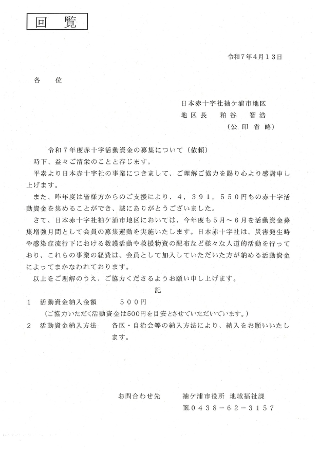
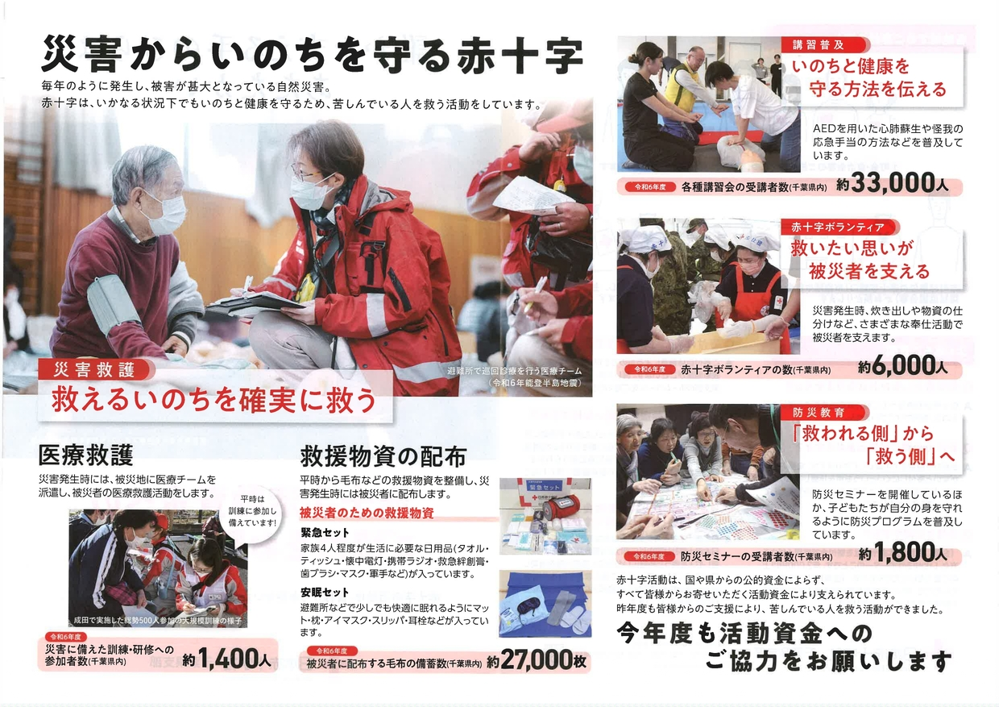

2. 令和７年度袖ケ浦市社会福祉協議会費の納入について（依頼）
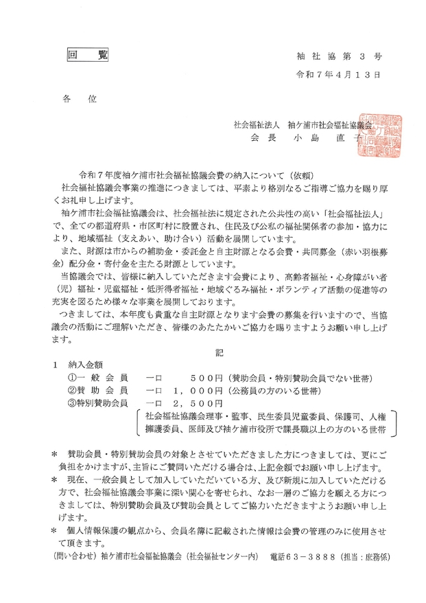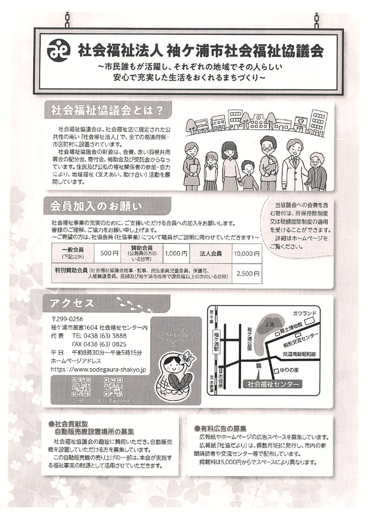

3. 令和７年度緑の募金運動について（依頼）
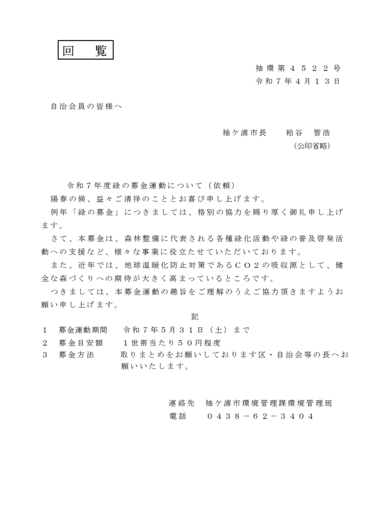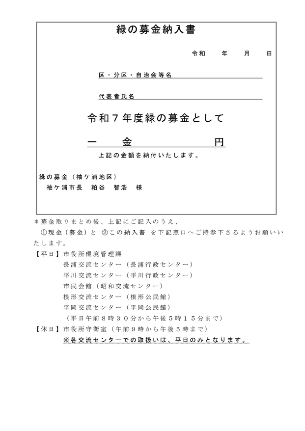
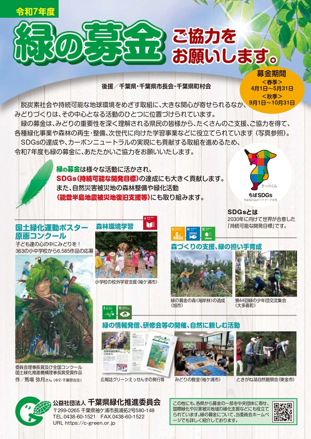

4. 令和７年度第１回市内一斉清掃の実施について（依頼）

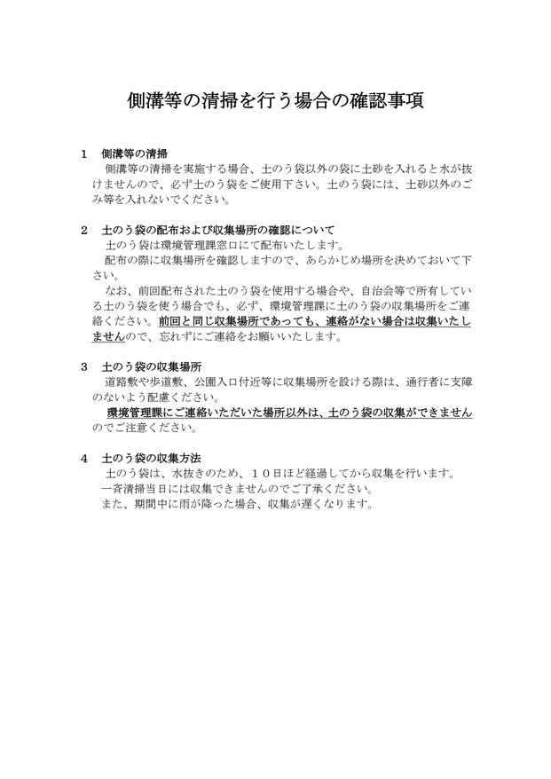
5. 「駅からハイキング」の開催について

6. 「地域安全ニュースふれあい第３４９号」及び 「犯罪発生地図」


7. 「高校生からシニア従業員のお仕事説明会」

8. 全国瞬時警報システム（Jアラート）全国一斉情報伝達試験の実施について（お知らせ）


9. 住宅用火災警報器設置状況調査の実施について（通知）


10. 「シニアそでがうら」第３５号
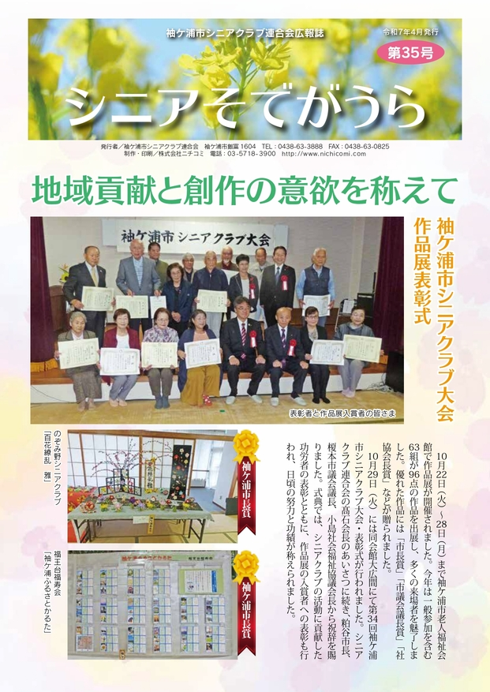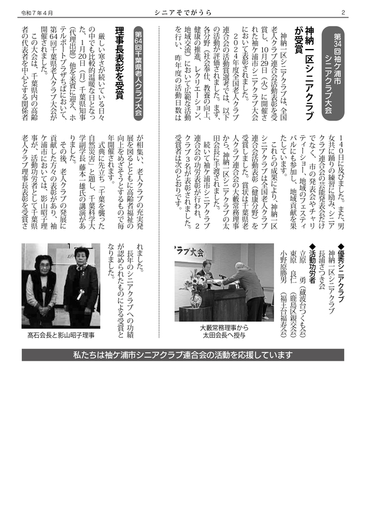
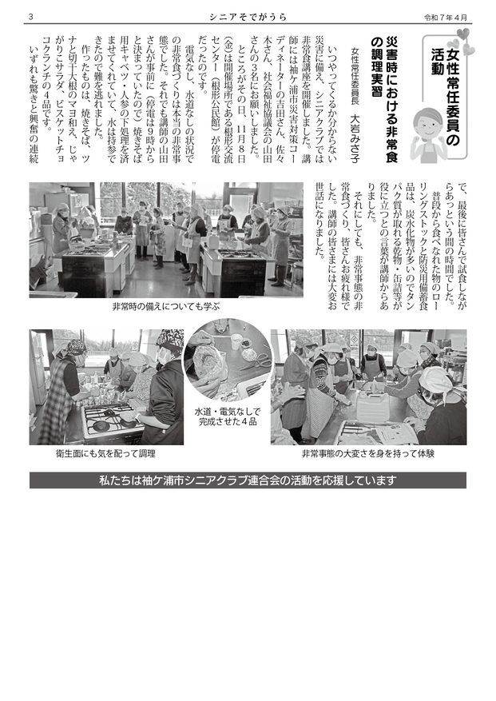
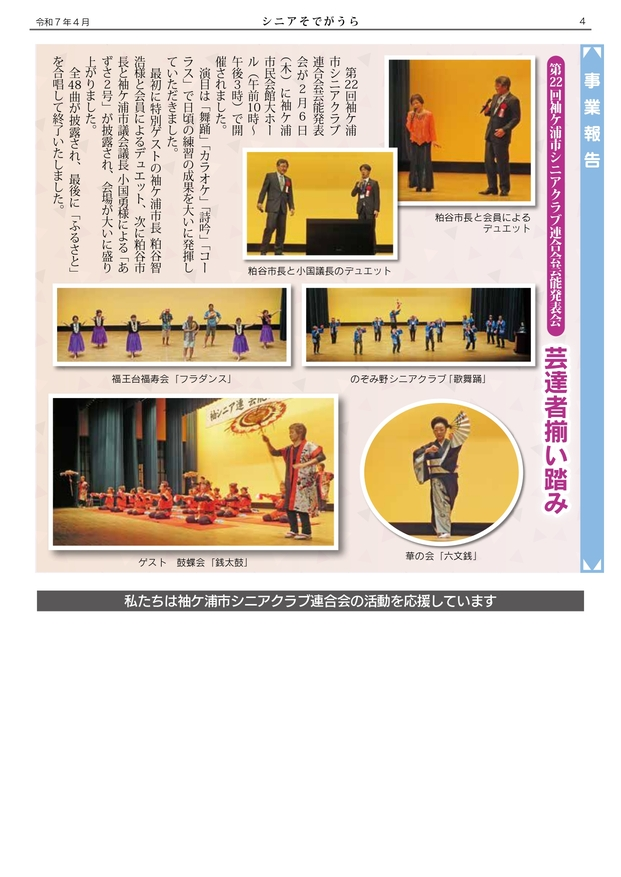

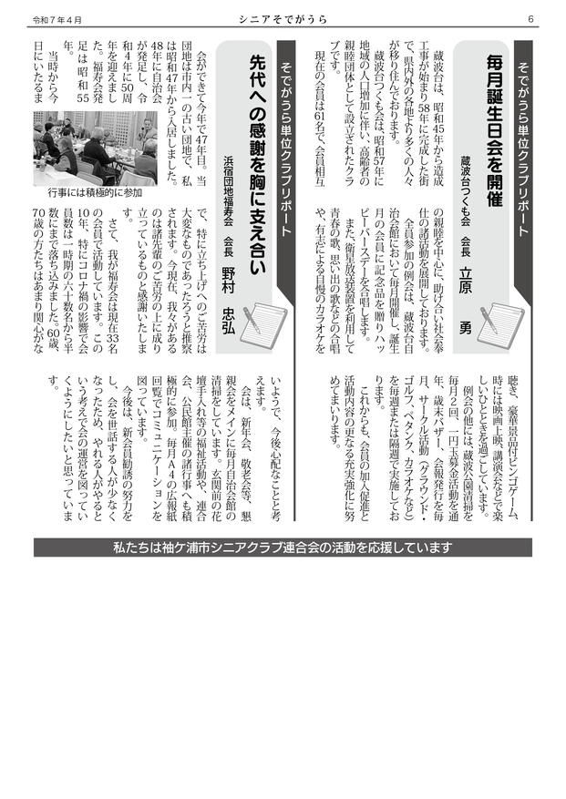

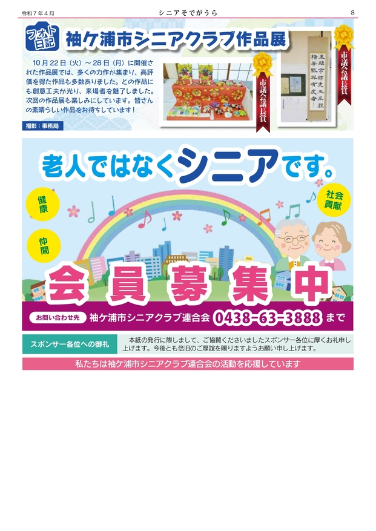